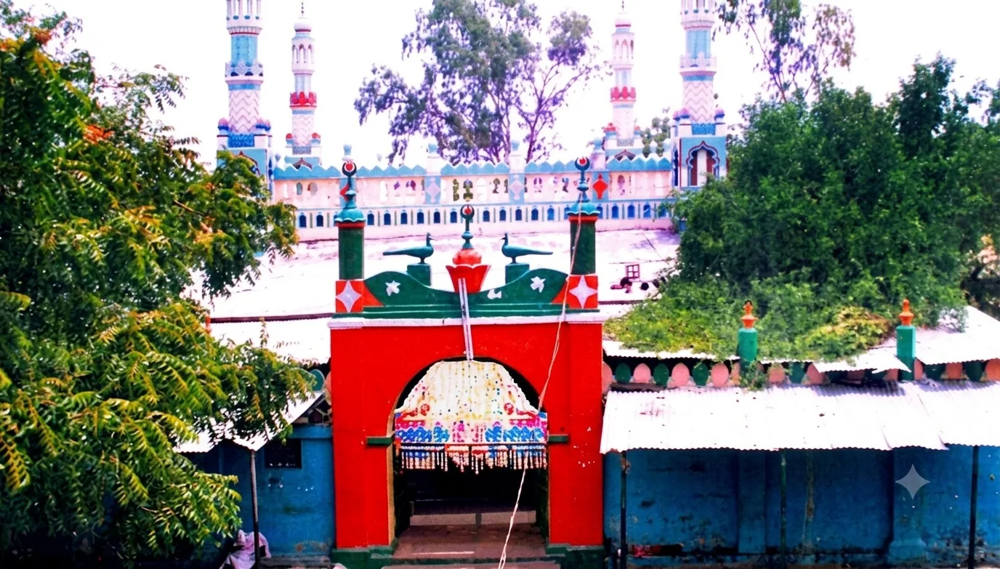

Live
Anantapur · Andhra Pradesh
Dargah Honnur
The shrine of Hazrat Khwaja Syed Shah Sufi Sarmasth Hussaini Chishty Al Quadri (R.A), who travelled from Bijapur across the Deccan.
Open the pageDargah & shrine pages
Every dargah has a story, a calendar and a doorway. Ziyarat turns that into a page pilgrims can actually use — history, prayer timings, urs dates, directions and photographs, in English, Urdu and Hindi.
The directory
Each shrine gets its own detail page. Open the one below to see exactly what that looks like — the grid grows as pages are built.

LiveThe shrine of Hazrat Khwaja Syed Shah Sufi Sarmasth Hussaini Chishty Al Quadri (R.A), who travelled from Bijapur across the Deccan.
Open the pageSend the shrine's details and we will build its page — the same structure, in your languages.
Request a pageWhat each page includes
Built around what someone actually needs before they travel — not a brochure.
The saint's life and the shrine's story, written plainly and sourced.
The five daily prayers, kept current rather than frozen into the page.
Dates with a live countdown that expires on its own. Nothing goes stale.
The full address and a map, so nobody arrives at the wrong village.
Photographs of the shrine, resized and optimised for slow connections.
English, Urdu and Hindi — with Urdu properly right-to-left, not bolted on.
How it works
The shrine's name and address, a little of its history, any photographs you have, and whom to contact.
Written, translated and checked. Anything that cannot be verified is left out rather than invented.
Published with its own address, and updated whenever the dargah sends new dates or photographs.
Get in touch
Contact the owner of this site with the shrine's details and we will put together a page like the one above. There is no charge to ask.
Contact details are being finalised — they will be published here shortly.